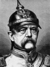

Lakabı “Demir Şansölye” olan Otto von Bismarck (1815–1898), 19. yy’da Alman birliğini kurmayı başaran politikacıdır. Onun liderliği altında Almanya, bir yığın küçük ve güçsüz devletler topluluğu olmaktan çıkıp Avrupa’nın en büyük askeri güçlerinden biri haline gelmiştir.

Bismarck en büyük Alman devletlerinden biri olan Prusya’da doğmuştu. Babası bir Prusya aristokratı, yani bir Junker’di. Bismarck, Berlin ve Göttingen üniversitelerinde eğitim gördü. 1847 yılında Prusyalı asil bir kadınla evlendi.
Aynı yıl Prusya Parlamentosu’na seçildi. Burada katı bir sağ kanat kral destekçisi olarak ün kazandı. Kral 4. Frederick William’ın (1795-1861) ve onun halefi 1. Wilhelm’in (1797-1888) safında yer aldı. Bismarck daha sonra Fransa ve Rusya’da elçilik yaptı. 1862 yılında Prusya başbakanı oldu.
Bismarck’ın öncelikli görevleri kralı korumak, orduyu güçlendirmek ve birliği cesaretlendirmekti. Almanlar genel olarak birlik fikrini destekleseler de Alman devletleri kendi bağımsızlıklarından vazgeçmeye yanaşmıyordu. Bismarck bu sorunu Prusya’nın askeri gücünü kullanarak zayıf devletleri yeni bir federasyona katılmaya ikna ederek çözdü. 1860’lı yıllarda Hanover, Frankfurt ve diğer küçük Alman prensliklerini ilhak etti.
Birlik yolunda atılan son adım 1870 yılında patlak veren Fransız-Prusya Savaşı oldu. Bu savaş diğer Alman devletlerinin de Prusya safında birleşmesini sağladı. 1871 yılında Fransa’nın yenilgisinin ardından Wilhelm kayser, yani Alman İmparatoru oldu. Derhal Bismarck’ı federasyonun ilk Şansölyesi ilan etti.
Şansölye olarak Bismarck Avrupa’da barışı güvence altına almaya çalıştı. Barış yeni birleşen Almanya’nın ekonomik ve askeri açıdan güçlenmesi için gerekliydi. Uluslararası alanda realpolitik olarak da bilinen ihtiyatlı dış politikası ile tanınmıştı. Dış politikada güçler dengesini esas alıyor ve ideolojiyi bir kenara bırakıyordu. Bismarck’ın ülke içinde de önemli bir gündemi vardı. Dünyanın ilk sosyal güvenlik sistemlerinden birini 1889’da uygulamaya koydu. Bu program ABD sosyal güvenlik programının ilham kaynaklarından biri olacaktı.
Wilhelm’in ölümünün ardından, torunu 2. Wilhelm (1859–1941) döneminde Bismarck politik gücünü yitirmeye başladı. 2. Wilhelm agresif bir dış politika izlemeyi tercih ediyordu. Bismarck birkaç yıl sonra seksen üç yaşındayken öldü.
Ek Bilgiler
1- Almanya’nın II. Dünya Savaşı’ndaki en önemli savaş gemilerinden biri adını Şansölyeden alıyordu, “Bismarck”. 1940 yılında iki günlük bir savaşın ardından İngilizler tarafından batırıldı.
2- Kuzey Dakota’nın başkenti adını 1873 yılında Bismarck’tan almıştır. Bölgede yoğun bir Alman nüfusu bulunmaktadır.
3- Bismarck döneminde Almanya, Afrika’daki ilk sömürgelerini ele geçirdi. Bunların arasında günümüzde bağımsız devletler olan Kamerun, Namibya ve Tanzanya da vardır.